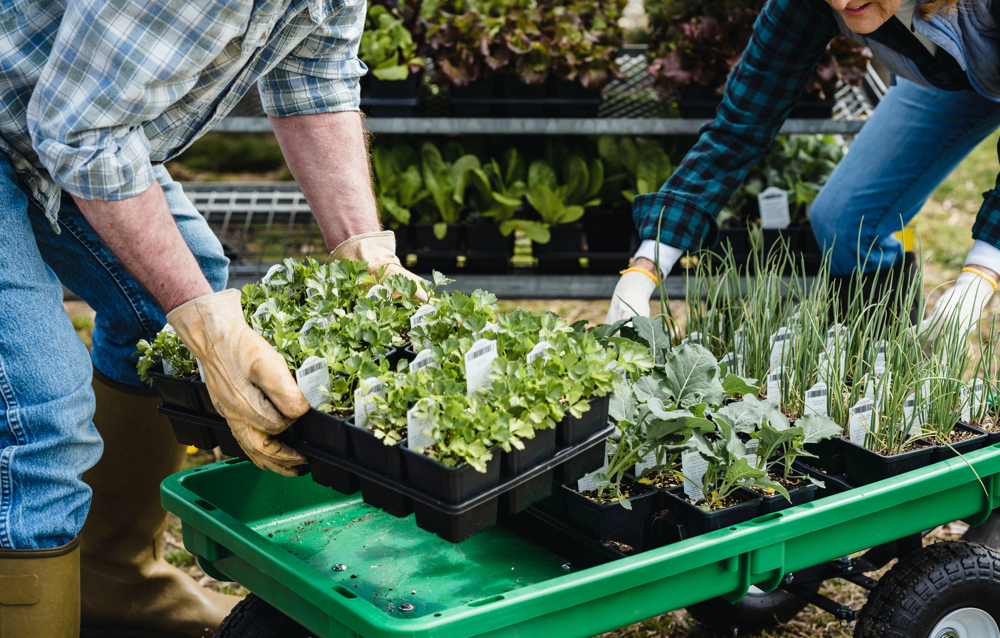
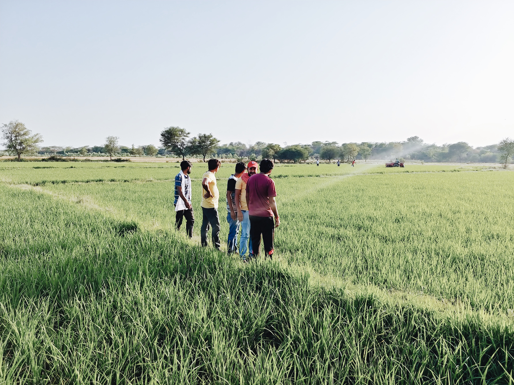

O Curso Bacharelado em Agronomia é oferecido pela Universidade Federal do Agreste de Pernambuco – UFAPE que foi criada a partir da lei Nº 13.651, de 11 de abril de 2018, através do desmembramento da Universidade Federal Rural de Pernambuco - UFRPE/ Unidade Acadêmica de Garanhuns - UAG; Unidade esta que foi criada no ano de 2005, por meio de programa de expansão universitária. A Universidade está localizada no Agreste Meridional de Pernambuco, dentro de uma área geograficamente formada por municípios situados nas mesorregiões do Agreste e Sertão, inseridos entre os estados de Pernambuco e de Alagoas, podendo se estender até a Bahia.
O Curso encontra-se regulamentado pelo Parecer CNE/CES Nº 306/2004 e pela Resolução CNE/CES nº 01 de 02/02/2006, que "Institui as Diretrizes Curriculares Nacionais para o curso de graduação em Engenharia Agronômica ou Agronomia e dá outras providências"; pela Resolução CNE/CES Nº 02 de 18/06/2007 que "Dispõe sobre carga horária mínima e procedimentos relativos à integralização e duração dos cursos de graduação, bacharelados, na modalidade presencial". Ela entrou em funcionamento em setembro de 2005 por meio de programa de expansão universitária e já no ano de 2007 os estudantes, então ingressantes, participaram do Enade – Exame Nacional de Cursos, e obtiveram desempenho acima da média, com conceito “5”. No ano de 2010, novamente os estudantes participaram do Exame, desta vez apenas concluintes, ficando o Curso com Conceito “4”. Por ocasião das repetidas notas acima da média no Enade, o curso recebeu no ano de 2012 sua Portaria de Reconhecimento a partir da nota do Enade, mediante expedição da Portaria Nº 01, de 6 de janeiro de 2012.
Neste contexto, o curso não precisou passar por todas as etapas de Reconhecimento via Sistema e-MEC. Entretanto, no ano de 2015, o curso teve seu processo aberto “de ofício”, devido a curso sem visita desde 2007.
O curso atende às normativas estabelecidas pela legislação pertinente e em conformidade com as demandas sócio-econômicas apresentadas pela sociedade brasileira, busca definir os princípios básicos norteadores do processo ensino-aprendizagem, em consonância com a realidade nacional definida pelo perfil profissional. A oferta do Curso Bacharelado em Agronomia tem como propósito contribuir para o desenvolvimento Regional do Agreste Meridional, onde a agricultura e a pecuária constituem atividades econômicas relevantes na região.
O ingresso de alunos nos cursos de graduação da Universidade Federal do Agreste de Pernambuco ocorre através do Exame Nacional do Ensino Médio - ENEM - e pelo Ingresso de Processo Seletivo Extra através do edital de inscrição divulgado pela Pró- Reitoria de Ensino de Graduação - PREG.
Objetivos:
O Curso de Agronomia da UAG/UFRPE, tem como objetivo: Graduar, em nível superior, Engenheiros Agrônomos capazes de promover, orientar e administrar a utilização dos fatores de produção. Visa racionalizar a produção vegetal e animal, planejar, pesquisar e aplicar técnicas, métodos e processos adequados à solução de problemas agrícolas, como também os aspectos sócio-econômicos, políticos, culturais e éticos, visando o desenvolvimento agrário sustentável e preenchendo os requisitos previstos no Decreto Nº 23.196 de 12/12/1933, a Lei Nº 5.194 de 24/12/1966 e a Resolução CONFEA N° 1.073, DE 19 /04/2016 que juntos regem o exercício legal da profissão do Agrônomo no Brasil.O Curso de Agronomia da UAG/UFRPE, tem como objetivo: Graduar, em nível superior, Engenheiros Agrônomos capazes de promover, orientar e administrar a utilização dos fatores de produção. Visa racionalizar a produção vegetal e animal, planejar, pesquisar e aplicar técnicas, métodos e processos adequados à solução de problemas agrícolas, como também os aspectos sócio-econômicos, políticos, culturais e éticos, visando o desenvolvimento agrário sustentável e preenchendo os requisitos previstos no Decreto Nº 23.196 de 12/12/1933, a Lei Nº 5.194 de 24/12/1966 e a Resolução CONFEA N° 1.073, DE 19 /04/2016 que juntos regem o exercício legal da profissão do Agrônomo no Brasil.
Perfil do Egresso:
O candidato deve ter afinidade com as ciências agrárias, senso de observação para questões relacionadas ao espaço e um espírito de liderança.
Segundo a Resolução do CONFEA N° 1.073, DE 19 /04/2016 a atribuição do profissional será dada em função dos conhecimentos obtidos na universidade. Sendo assim, além de flexível, a formação dos nossos discentes terá de dar suporte para nossos futuros profissionais atuarem no mercado Regional, Nacional e Internacional.
Outras informações:
Desenvolver conhecimentos científicos para o estabelecimento de tecnologias socialmente justas;
Desenvolver processos produtivos que imitem ou respeitem o equilíbrio dos ecossistemas naturais do País, mais particularmente no Nordeste.
Propor modificações e/ou transformações nos sistemas de produção, a partir do conhecimento dos ecossistemas, e do entendimento da formação histórica e das características atuais, no que tange à posse e uso da terra, às relações de trabalho e à base técnica;
Contemplar o graduando com uma formação generalista para sua participação social na história da sociedade civil, com a prática equilibrada da cidadania e de seu exercício profissional conforme as exigências e avanços da sociedade civil organizada e do mercado de trabalho.


Áreas de atuação:
Entre os inúmeros campos de possível atuação profissional para esse Engenheiro Agrônomo, têm-se:
Administração Rural em empresas, associações e entidades públicas ou privadas;
Extensão Rural e Assistência Técnica nas comunidades rurais e municípios;
Crédito Rural Orientado para agências financiadoras do desenvolvimento;
Sanidade Vegetal para controle de pragas e doenças;
Meio-ambiente como fiscal da legislação ambiental e atividades correlatas;
Suprimentos Agrícolas na rede comercial de produtos agropecuários;
Pesquisa e Desenvolvimento para geração de tecnologia agrícola;
Engenharia Rural como topografia, irrigação, drenagem, construções e operações com máquinas e implementos agrícolas;
Zootecnia com enfoque para nutrição animal, melhoramento genético e produtos pecuários;
Agroindústria alimentícia e não alimentícia ligadas ao setor primário;
Paisagismo e Floricultura especializada em ambientação;
Agente ativo nas cadeias produtivas do agronegócio regional e nacional;
Técnico Superior em órgãos governamentais federais, estaduais e municipais;
Ensino em Ciências Agrárias em escolas técnicas e superiores;
Empreendimentos em microempresas do setor agrário ou nas organizações não governamentais;
Sistemas, Métodos, Uso e Aplicações da Topografia e da Cartografia;
Aerofotogrametria, Sensoriamento Remoto, Fotointerpretação e Georreferenciamento;
Atividades multidisciplinares referentes à Planejamento Urbano e Regional no âmbito da Engenharia Agronômica;
Ordenamento Territorial Agrossilvipastoril;
Desmembramento e Remembramento;
Cadastro Técnico de Imóveis Rurais;
Agrometeorologia e Climatologia Agrícola;
Sistemas e Métodos Agropecuários e Agrossilvipastoris;
Tecnologia de Ambientação e Manejo de Plantas e Animais Domésticos e da Fauna Silvestre;
Biossegurança, Inspeção, Defesa, Controle e Vigilância Sanitária;
Receituário Agronômico;
Certificação, Licenciamento, Classificação e Rastreabilidade de Produtos Agropecuários;
Tecnologia de Produção e Pós Colheita de Produtos Agropecuários;
Tecnologia da Transformação de Produtos de Origem Vegetal e Animal;
Bromatologia;
Zimotecnia;
Biotecnologia;
Engenharia Genética e Melhoramento Animal e Vegetal;
Agricultura de precisão;
Aplicações da Aviação Agrícola;
Tecnologia dos Materiais de Construção, Construções, Edificações e Instalações complementares para Fins Agropecuários e Agroindustriais;
Instalações Elétricas em Baixa Tensão para Fins Agropecuários e Agroindustriais de pequeno porte;
Estradas Rurais;
Hidráulica Aplicada a Sistemas de Irrigação e Drenagem, Barragens e Obras de Terra;
Hidrologia Aplicada a Manejo Integrado de Bacias Hidrográficas;
Fontes e Conservação de Energia, e Eficientização de Sistemas Energéticos em Áreas Rurais;
Máquinas, Implementos e Mecanização Agrícola;
Armazenagem e Transporte de Produtos Agropecuários;
Sistemas Agroindustriais;
Preservação e Manejo da Biodiversidade;
Impacto Ambiental, Avaliação, Recuperação e Monitoramento de Áreas e Meios Degradados;
Recuperação de Áreas Degradadas, Recursos Naturais e Biodiversidade;
Sistemas e Métodos de Manejo, Gestão, Avaliação, Monitoramento, Proteção, Mitigação, Manutenção, Recuperação, Aproveitamento Racional, e Preservação e Proteção de Ecossistemas e Recursos Naturais Renováveis, e Áreas e Meios Degradados;
Fitofisionomia Paisagística Urbana, Rural e Ambiental;
Parques e Jardins;
Saneamento no campo da atuação profissional;
Aproveitamento, Tratamento, Uso e Reuso de Resíduos e Efluentes;
Controle de Vetores;
Política Agrícola. Política Agrária. Política e Desenvolvimento Rural;
Empreendimentos Agropecuários;
Agronegócio;
Administração Rural e Agroindustrial;
Gestão Empresarial;
Economia, Logística, Marketing, Mercado e Comercialização Agroindustrial;
Crédito Rural;
Associativismo e Cooperativismo.
O mercado de trabalho ainda estende-se às Cooperativas de produtores rurais, às indústrias de fertilizantes e defensivos agrícolas, aos bancos e aos setores públicos, como secretarias estaduais, municipais e Ministério da agricultura, a Institutos como IPA, IBAMA, SUDENE, EMATER, INCRA, SENAR, EMBRAPA, Escolas Técnicas Federais e Universidades.